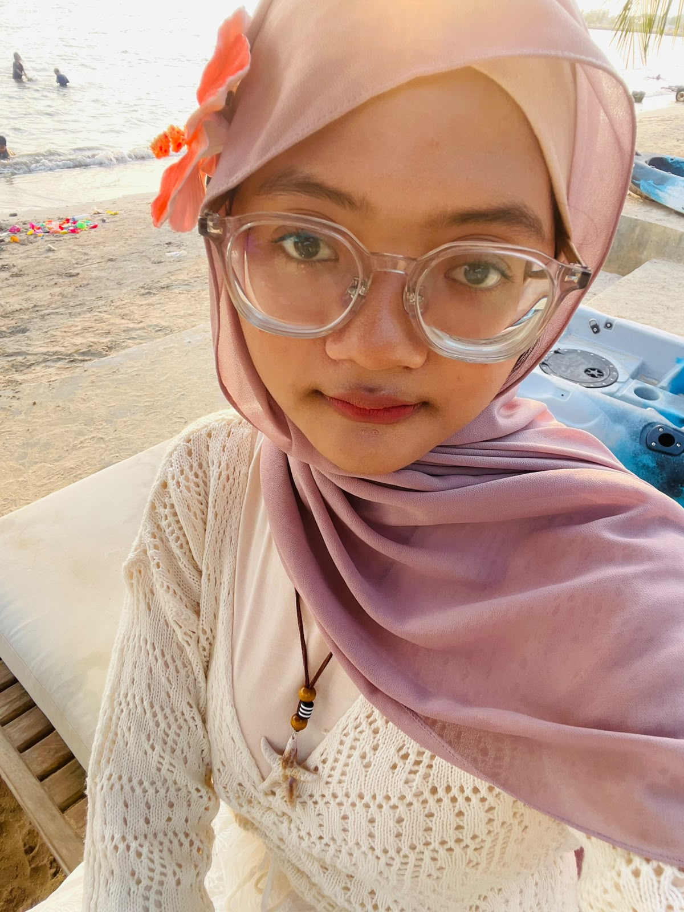

👤
Identitas Diri
Nama: Najwa Amalia Zahra
NIM: 2505090069
Program Studi: Pendidikan Teknik Informatika dan Komputer
Universitas: Universitas Negeri Semarang (UNNES)
Angkatan: 2025
Aku mahasiswa Pendidikan Teknik Informatika dan Komputer di Universitas Negeri Semarang. Aku tertarik pada dunia kreatif digital dan teknologi, khususnya UI/UX Design dan juga Motion Graph.
About Me →
Mahasiswa PTIK UNNES
✦ "Study Hard, istiraHARD"Identitas dan latar belakangku :O.
Nama: Najwa Amalia Zahra
NIM: 2505090069
Program Studi: Pendidikan Teknik Informatika dan Komputer
Universitas: Universitas Negeri Semarang (UNNES)
Angkatan: 2025
Aku punya ketertarikan sama graphic design dan editing video! XD Jadi, kegiatan ini menjadi sarana untuk mengembangkan kreativitas, kemampuan visual, dan juga mengasah skill aku dalam memproduksi produk (design & video).
Graphic Design Video Editing Creative DigitalTujuan yang ingin aku capai di masa depan. (Semoga amiinn..!!)
Aku bercita-cita memiliki karier di bidang teknologi yang sesuai sama minat dan kemampuanku. Aku juga pengen terus belajar, mengembangkan keterampilan, serta menghasilkan karya yang lebih banyak.
Aku pengen belajar UI/UX Design sampai expert dibidang itu. UI/UX berfokus pada perancangan antarmuka dan pengalaman pengguna agar website dan aplikasi mudah digunakan serta sesuai kebutuhan pengguna.
Aku pengen mempelajari riset pengguna, wireframe, desain antarmuka, prototyping, dan usability testing.
UI Design UX Research Wireframing PrototypingMelalui pendidikan, kreativitas, dan teknologi, aku pengen terus meningkatkan kemampuan diri dan mewujudkan cita-cita.